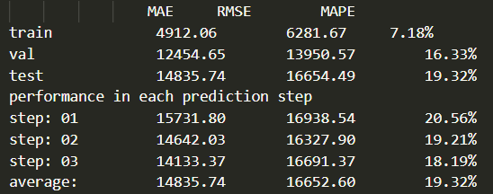

要解決的問題
土地價格及交易量受區域與時間變化影響。
輸入、處理與產出
- 輸入
- 實價登錄與區域每月交易資料。
- 處理方式
- 將交易轉成區域平均單位價與交易量目標，以GMAN基礎方法進行模型及區域比較。
- 產出
- 訓練設定、分區評估、重現方式與決賽報告；團隊獲創意獎。
適用範圍
預測區域平均指標，與單筆土地估價不同；基礎GMAN方法為第三方研究。
相關案例
成果與驗證
三人團隊完成訓練配置、區域評估、重現流程及決賽報告，獲創意獎。
時空模型 · 配置驅動訓練
團隊競賽
以區域與時間訊號研究土地價格和交易量預測。

土地價格及交易量受區域與時間變化影響。
預測區域平均指標，與單筆土地估價不同；基礎GMAN方法為第三方研究。
三人團隊完成訓練配置、區域評估、重現流程及決賽報告，獲創意獎。
時空模型 · 配置驅動訓練